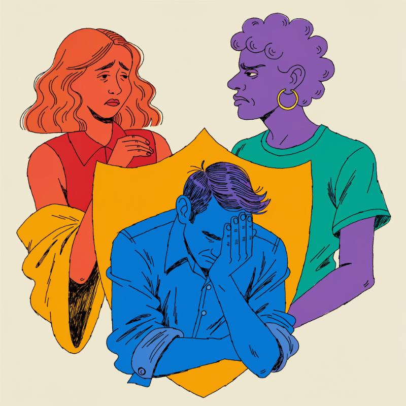

Mary Rodee's 15-year-old son died after online extortion, and she drove to Oakland to watch the trial that was supposed to explain why. She got eight days of it. The case, brought by 29 states and joined by others, was built on internal Meta documents showing executives knew about the platforms' harms and internal testing that undercounted them (Al Jazeera). Instagram chief Adam Mosseri had just admitted under oath that only 1% to 2% of teens used a break-reminder feature Meta had publicized to parents as protection, when the settlement landed and his testimony stopped (Al Jazeera). Meta will pay up to $18 billion over 10 years, add time limits and parental controls to Facebook and Instagram, and admit no wrongdoing (BBC). Rodee's question was simple: "What evidence did they not want to get out?" (Al Jazeera)
The settlement's substance raised the same question the timing did. Arturo Bejar, the former Meta safety engineer whose testimony anchored the states' case, said the deal leaves the core harms he described — undercounted abuse, algorithms pushing self-esteem-damaging content, mishandled predation reports — largely untouched, calling it "safety theater" that will make Instagram "used a little less" but "not any safer" (Reuters). California Attorney General Rob Bonta, who led the states, called the deal historic protection for kids; Bejar, who testified for those same states, said it doesn't reach what he testified about (Reuters). One of the headline fixes, hiding like counts, is a feature Meta tested in 2020 and found moved daily user numbers by roughly 0.09%, then shelved for years before agreeing to it now as a concession (Reuters).
Buried further in is a provision letting Meta collect and use under-13 children's data to build its age-verification model, with the states agreeing never to sue over it under child privacy law (TechCrunch). Bloomberg reported the deal also resolves Meta's lingering Cambridge Analytica exposure, folding a 2016 election-data scandal into the same settlement covering teen mental health (Bloomberg Business). Meta's stock rose after the announcement (The Independent).
The settlement's real test starts with two companies who haven't said a word.
TikTok and YouTube Have Roughly a Year to Decide Whether $5.3 Billion Is Worth Fighting For. Part of Meta's payout, that chunk conditional on its rivals matching its new time limits and age checks, only becomes real money if TikTok and YouTube sign on (BBC). Both companies have gone quiet since Bonta said he'd reached out and that TikTok seemed open to talking, and that silence is itself the tell. The most likely outcome in the next two weeks is a soft public statement from one or both platforms committing to "explore" similar features while offering no enforceable deadline, a move that costs nothing and buys time. Bonta has already signaled what happens if that stalling continues: he's "willing to take additional steps," which in a state attorney general's mouth usually means a new lawsuit within months, not a phone call. TikTok, still fighting its own federal fights over U.S. ownership, has every incentive to look cooperative without committing to anything binding. YouTube, backed by Google's legal team and years of practice absorbing regulatory heat, will almost certainly move slower still.
That standoff is the visible fight. The one to watch harder is quieter.
Meta's Under-13 Data Carve-Out Will Get Tested Before the Ink Dries. The provision letting Meta use children's data to train its age-verification model, paired with a promise from states never to sue over it, creates a boundary that depends entirely on Meta staying inside lines nobody outside the company can see (TechCrunch). Meta has one year to build and start testing that model. The most likely friction point isn't intentional misuse. It's the ordinary reality that data inside a company the size of Meta doesn't stay isolated, and an independent auditor now has to prove a negative across systems Meta itself may not fully map. Expect privacy researchers and possibly the FTC, which wasn't party to this deal and isn't bound by its terms, to start probing that boundary well before the one-year mark. If the FTC moves on COPPA grounds the states waived, Meta will find out fast that a state-level release doesn't buy federal peace.
That number is the real reason this week's deal happened when it did, and it's the reason Meta's legal team isn't done. Meta will almost certainly cite this settlement's structure, admit-nothing, pay-over-time, parental-controls-as-remedy, as the template it wants applied to that larger bundle. Plaintiffs' attorneys in the consolidated cases now have a floor and a ceiling to negotiate against, and Mark Zuckerberg's unbroken streak of never testifying under oath in any of this becomes the thing Meta's lawyers protect above all else in whatever comes next.
The settlement's real leverage point isn't in the agreement's text — it's in who else is now free to move.
Bejar's Courtroom Testimony Just Became Public Ammunition for the 100,000-Plus Plaintiffs Meta Was Trying to Get Ahead Of. Bejar testified for eight days before the settlement cut his cross-examination short, and unlike a jury verdict, testimony already on the record doesn't disappear when a case settles. That combination is new: a whistleblower with firsthand knowledge of Meta's internal harm data, freed from any confidentiality Meta could have negotiated if the case had gone to a verdict instead of stopping mid-trial. Plaintiffs' attorneys in the consolidated addiction-design lawsuits can now depose Bejar, cite his testimony, and use his "safety theater" framing as a roadmap for what Meta's settlement didn't fix. Mosseri's admission that only 1% to 2% of teens used Meta's own publicized safety feature is now sitting in a public record too, available to any lawyer building the next case. Meta bought quiet from 48 states. It didn't buy quiet from Bejar, and it didn't buy quiet from the transcript.
Once plaintiffs' lawyers have that transcript in hand, the next door opens somewhere Meta didn't choose: state legislatures that were waiting to see how the lawsuit landed before writing their own rules.
State Legislators Now Have a Bejar-Shaped Template for Laws Meta Can't Settle Its Way Out Of. A settlement binds Meta to specific remedies; it doesn't bind a state legislature to stop there. Colorado, where Bejar's testimony centered on mishandled predation reports involving a Colorado teenager, and California, where Bonta just spent political capital calling this deal historic, are the two states with attorneys general who have both the testimony and the incentive to push further. The mechanism that just became available is legislative, not judicial: a bill mandating algorithmic transparency or restricting ad targeting to minors doesn't require proving Meta broke a law, only that lawmakers didn't like what the trial exposed before it got interrupted. Mary Rodee and Lori Schott, the parents who said the settlement wouldn't have protected their children, are exactly the kind of witnesses a state legislative hearing is built around. That's a lower bar than the one Bejar's testimony faced in front of a jury. It also means Bonta's own settlement could become the evidence used to argue his state didn't go far enough.
There's a third door here, and it's the one that doesn't require a lawsuit or a bill.
TikTok and YouTube's Silence Gives Snap an Opening to Move First and Cheap. Bonta already said he's spoken with Snap, a company with a fraction of Meta's user base and far less exposure in the addiction-design litigation pile. Snap adopting Meta's time limits and age checks voluntarily, before TikTok or YouTube commit to anything, costs Snap little and buys it the one thing smaller platforms rarely get: a state attorney general publicly citing it as the good example. That's a door that wasn't there last month, because there was no template to match and no attorney general actively shopping for a company willing to say yes first.
The settlement came with a press release, and the press release is where the second story starts.
"Historic Protection for Our Kids" Is the Line Rob Bonta Chose. It's Not the Line Bejar Chose. Bonta, the California attorney general who led the states' coalition, called the deal historic and said it makes social media "less dangerous" for children (Reuters). It's an easy line to believe. Bonta spent months building a case with real evidence, real testimony, real internal documents showing Meta knew what its platforms were doing to kids, and $17 to $18 billion is the kind of number that sounds like consequence. Parents who've spent years watching Meta's disclosures thin out want a win to exist, and Bonta needs one too: he ran this case as the marquee consumer-protection fight of his tenure, the one he's already comparing to the Big Tobacco settlements of the 1990s. But the man who spent eight days describing the exact harms this settlement claims to fix said, in the same news cycle, that it doesn't fix them. Bejar called the deal "safety theater," and he wasn't a bystander. He was Bonta's own witness.
The gap between those two sentences is the story Bonta's press release doesn't want told. Bonta's version treats the settlement's checklist, time limits, night mode, hidden like counts, as proof the underlying harms are addressed. Bejar's version, built from years inside Meta's safety team, says the checklist was never the problem; the problem was algorithms pushing self-esteem-damaging content to vulnerable teens and predation reports that got mishandled at scale, and none of that is meaningfully touched. Meta gets to have it both ways because Bonta's framing is doing the marketing Meta itself can't do while admitting no wrongdoing. Every state AG who repeats "historic" without Bejar's caveat is, whether they mean to or not, laundering Meta's talking point through the credibility of a lawsuit that was supposed to hold Meta accountable.
This agreement could simply codify much of the 'safety theater' that Meta has been doing in recent years. Instagram will be used a little less, but it will not be any safer.
Arturo Bejar, former Meta safety engineerWho benefits from "historic" winning the headline? Bonta gets a marquee consumer-protection victory to run on. Meta gets a settlement that reads as capitulation while leaving its recommendation engine and ad-targeting model untouched. Neither of them benefits from Mary Rodee's or Lori Schott's names attached to the same sentence, so they won't be. The tobacco parallel Bonta invited cuts against him here: the 1998 settlement everyone now cites as precedent didn't stop nicotine addiction either, it just made the industry pay for getting caught. Calling this deal historic isn't a lie about the dollar figure. It's a lie about what the dollar figure bought.
![NTK]()